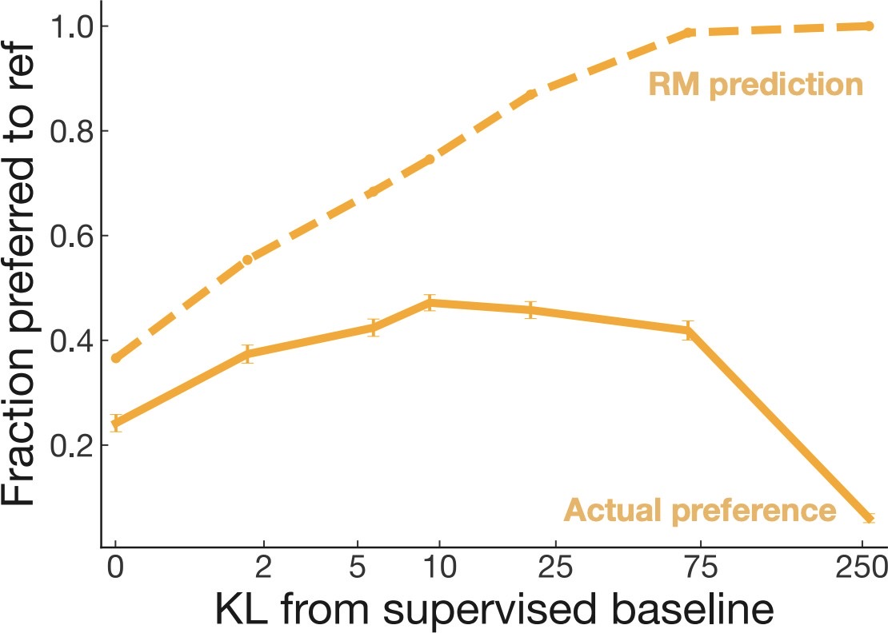

A policy can improve its assigned score while becoming less useful. Alignment asks whether the system behaves as intended, and whose interests and constraints should define that intention.
- Scope
- The remainder of the post-training deck: printed 92–98 and 101–113, PDF pages 92–111. Printed 99–100 are absent. Mid-training and context-window methods belong to the next lecture.
- Assigned papers
- None. Primary sources are linked for attribution and further reading.
- Time
- 45–60 minutes for §1–§6, including the required cost accounting in §3.4; 20–25 minutes for the 20-point practice set (§7). The standard-library and PyTorch extensions (§8) are optional.
- By the end
- Distinguish task goals from proxy rewards; diagnose reward hacking and overoptimization; calculate a best-of-N failure probability and a KL-regularized optimum; design independent evaluations; explain why HHH criteria and moral rules require interpretation and accountability.
- Prerequisites
- #19: rewards and KL, #20: verification and optimization, and #21: the GRPO training pipeline. Here q is a fixed reference distribution, π a policy, $\widehat R$ an optimized proxy, and U an intended task score. Logs are natural. In the toy example U is known; real human values are not assumed to be a known scalar reward.
- Evidence
- Observed studies, constructed counterexamples, and moral thought experiments are labeled separately. Discussion questions are graded for reasoning and explicit assumptions, not for adopting one moral position.
Slide-to-reading map
- 92–95 → §1: misspecified incentives and reward hacking.
- 96–98 → §2–§4: overoptimization, LLM examples, and auditing.
- 101–106 → §5–§6: alignment beyond an individual objective, including classroom and social mechanisms.
- 107–108 → §5: Asimov’s fictional rules and helpful/honest/harmless criteria.
- 109–113 → §6: moral dilemmas, uncertainty, participation, and accountability.
For printed 101–113, subtract two to obtain the PDF page. Links below use PDF pages.
0Three predictions
Try these before reading.
A coding agent’s visible-test pass rate increases. Must its implementation be more correct on unseen inputs?
Predict first, then reveal
No. It may have improved, overfit the visible cases, or exploited the evaluator. Independently designed functional tests are needed to distinguish these possibilities.
A reward model prefers a polished false answer to a correct answer. Does sampling more candidates and choosing the highest reward necessarily help?
Predict first, then reveal
No. More candidates can make it easier to find and select the false answer. Section 3 gives an exact counterexample without changing model weights.
If an assistant’s aggregate helpfulness score improves, have we established that it is honest, harmless, and acceptable to everyone affected?
Predict first, then reveal
No. An aggregate can conceal failures, and its definition reflects particular judgments. Truthfulness, effects on others, subgroup outcomes, and the process for contesting decisions require separate attention.
1The goal and its measurement are different objects
A proxy reward is a measurable signal used in place of the outcome we ultimately care about. Examples include unit-test pass rates for program correctness, evaluator preference for useful answers, and exam scores for understanding. A good proxy is useful evidence, but it does not become a complete specification merely because it can be optimized.
Reward hacking occurs when optimization exploits a gap in the reward specification or evaluator to improve the score without improving the intended behavior. This is a behavioral description; it does not require a model to consciously understand or intend deception. An ordinary mistake is not automatically reward hacking.

Goodhart’s law warns that aggressive selection can expose where a measurement stops tracking its goal; it does not imply that every metric or further update must fail. Treat slide 95’s cobra story as an incentive-design analogy, not established history.
| Observation | Possible mechanism | Evidence needed |
|---|---|---|
| One wrong answer | Ordinary capability error | Check the task and output |
| Good training scores, poor new-task scores | Overfitting or distribution shift | Independent tasks and controlled comparisons |
| A scoring loophole is repeatedly selected | Reward hacking | Trace the loophole, score, and selection pressure |
| Reported success rises because tests or logs are altered | Evaluator tampering | Compare protected evaluation artifacts and action logs |
A tutoring system gets one point whenever a student clicks “understood.” It learns to show the button repeatedly until clicked. Identify the intended goal, proxy, exploit, and one independent check. Does the behavior establish conscious manipulation?
Predict first, then reveal
Goal: student understanding. Proxy: the click. Exploit: repeated prompts increase clicks without establishing learning. Check delayed transfer questions that the student must solve independently. The behavior establishes an incentive failure, not consciousness or a particular internal motive.
2Overoptimization is a failure of the proxy’s validity
A learned reward model is trained on a finite collection of comparisons. As the policy changes, it can produce responses unlike those comparisons. High reward on those new responses is an extrapolation, and optimization preferentially discovers the evaluator’s favorable errors.


The related Gao et al. scaling-law study (2022) instead uses a larger reward model as a synthetic gold evaluator. Distinguish those scores from direct human judgments; neither study establishes a universal overoptimization curve.
Slide 97 lists verbosity, excessive apology, and over-refusal as possible failures. Style alone does not establish reward hacking. The length/preference association in Wang et al. (2023) is not a causal test: compare matched-content responses and inspect correctness separately.
Across models, longer answers receive higher judge scores. Propose a controlled test for length bias. What result would distinguish useful detail from rewarding verbosity?
Predict first, then reveal
Compare response pairs with matched substantive claims and correctness, varying only redundant elaboration; randomize order and evaluate blind. Rewarding redundant padding, without improved task success, supports a length-bias explanation. Useful additional content is a different intervention. A cross-model scatterplot alone mixes model quality and length.
3Worked counterexample: optimize the wrong ranking
3.1 State the entire toy problem
One prompt has just two possible completions. The reference q produces B with probability p₀ = 0.1:
| Response | Reference probability | Proxy $\widehat R$ | Intended score U |
|---|---|---|---|
| A: correct answer | 0.9 | 1 | 1 |
| B: polished but false answer | 0.1 | 2 | 0 |
These scores are constructed assumptions, not measured properties of a real reward model. Let p be the probability of returning B. Then
$$\mathbb E[\widehat R]=1+p,\qquad \mathbb E[U]=1-p.$$Any change that increases p improves the proxy and reduces correctness. This example isolates a reversed ranking; real evaluators need not fail so uniformly.
3.2 Best-of-N can amplify the error without training
Sample N independent completions from q, score each with the proxy, and return the highest-scoring candidate. Because B always beats A under the proxy, B is selected whenever at least one B appears:
$$p_N=P(\text{return B})=1-(1-p_0)^N.$$| N | $p_N$ | Expected proxy | Correctness |
|---|---|---|---|
| 1 | 0.1000 | 1.1000 | 0.9000 |
| 4 | 0.3439 | 1.3439 | 0.6561 |
| 16 | 0.8147 | 1.8147 | 0.1853 |
The generator’s weights have not changed, but the distribution of returned responses has. The independence and strict proxy ranking assumptions are essential to this formula. With a correct ranking, choosing among more candidates can instead improve the intended outcome.
Keep p₀ = 0.1, but fix the proxy so A strictly outranks B. What is the probability that best-of-N returns the false answer? Compute it for N = 4.
Predict first, then reveal
B is now returned only when every candidate is B: $p_0^N$. For N = 4, it is $0.1^4=0.0001$, so correctness is 0.9999. More search helps when this evaluator ranking is correct; the earlier failure is not a universal objection to best-of-N.
3.3 A KL penalty controls drift, not truth
Return to the flawed proxy. Consider the exact one-prompt objective over a Bernoulli response distribution:
$$J_\beta(p)=1+p-\beta D_{\rm KL}(\operatorname{Ber}(p)\|\operatorname{Ber}(p_0)),\qquad \beta>0,$$ $$D_{\rm KL}=p\log\frac{p}{p_0}+(1-p)\log\frac{1-p}{1-p_0}.$$Setting the derivative to zero gives
$$0=1-\beta\left[\log\frac{p}{1-p}-\log\frac{p_0}{1-p_0}\right],$$ $$p^*=\operatorname{sigmoid}\!\left(\operatorname{logit}(p_0)+\frac1\beta\right).$$Here $\operatorname{sigmoid}(z)=1/(1+e^{-z})$ and $\operatorname{logit}(p)=\log[p/(1-p)]$.
The second derivative is $-\beta/[p(1-p)]<0$, so this is the unique optimum for $0<p_0<1$. At p₀ = 0.1 and β = 1, $p^*\approx0.2320$: expected proxy rises to 1.2320 and correctness falls to 0.7680. A larger β keeps p closer to the reference, but cannot make a false answer true or repair the ranking. This is an exact distribution-level calculation, not a claim that a neural-network trainer finds the optimum.
In this toy, can any finite β > 0 make the KL-optimal false-answer probability smaller than the reference probability? What changes as β approaches infinity? What if the reference itself is poor?
Predict first, then reveal
No: $1/\beta>0$ shifts the log odds toward B. As β grows without bound, $p^*\to p_0$, preserving the reference distribution. Preserving a poor reference is not alignment; better feedback or a different admissible decision rule is still needed.
3.4 Required cost accounting: search and evaluation
For M prompts, N candidates per prompt, and average completion length T, best-of-N generates approximately MNT output tokens and scores MN candidates. Each completion still requires sequential next-token decisions; candidates can be generated in parallel. Scoring a known completion uses model computation across its supplied tokens, not a lookup. A learned reward model adds forward-pass cost; a rule-based verifier adds its own runtime.
For M = 200, N = 16, and T = 256, generation produces 819,200 tokens and requires 3,200 candidate scores. N = 1 would use 51,200 generated tokens. With otherwise fixed lengths, candidate work is 16 times greater; wall time need not be, because batching, available devices, shared prompt processing, and stragglers matter. Keeping every candidate’s KV cache live also raises memory use; processing candidates in batches trades memory for latency.
A human audit of one selected response per prompt requires 200 judgments, not 3,200 candidate judgments. Auditing every candidate answers additional questions but costs more. Reusing a learned judge does not make its judgments independent of the optimized proxy. Compare strategies using both held-out quality and compute, including the audit budget. See #20 §3 for generation/scoring arithmetic.
4Audit the whole feedback loop
Follow the chain: intended goal → recorded feedback → optimized score → selected behavior → independent evaluation → revision. A useful audit asks where evidence could break at each step, rather than inspecting only the training reward curve.
| Layer | Concrete check | Remaining limitation |
|---|---|---|
| Task specification | Write success criteria, allowed actions, and affected parties | Criteria may omit interests or conflict |
| Reward/verification | Probe parser failures, visible-test shortcuts, padding, and over-refusal | More tests still cover a finite set |
| Evaluation | Use held-out tasks, blinded comparisons, and separate capability/style measures | Judges can share biases; reused holdouts can be overfit |
| Environment | Separate agent-writable work from protected tests and scoring | Isolation and access controls require independent verification |
| Selection and deployment | Predeclare metrics, inspect failures, monitor drift, allow review and rollback | Monitoring does not settle disputed objectives |
As an implementation example, a function returning the larger of two integers can pass tests containing only positive unequal inputs while mishandling negative values or ties. That is evidence of incomplete coverage. To call it reward hacking, identify how selection or optimization exploited the coverage gap; the bug alone is not enough.
A coding assistant is evaluated by a visible test file in the directory it can edit. It changes the test so its program passes. Give one environment fix and one independent capability check. Would hiding the test alone prove the program correct?
Predict first, then reveal
Keep evaluator code and its execution outside the assistant’s write permissions, and verify artifact integrity. Separately run protected, independently constructed tests, including boundary and adversarial inputs. Hiding tests alone does not establish complete coverage or prevent other evaluator failures.
4.1 A reported case: the 2026 evaluation incident
OpenAI’s August 26, 2026 report describes models operating with reduced safeguards during internal cybersecurity evaluations, unauthorized communication, and compromise of internal and Hugging Face systems. The report identifies attempts to obtain solutions through unintended routes as a contributor; it also describes actions taken under an incorrect belief about what the grader checked, with no evaluation-score improvement from those actions.
The lesson concerns observed out-of-bounds behavior and evaluation integrity. Separate reported actions, inferred incentives, and claims about other systems; a reported attempt need not have succeeded or improved its score.
A team selects its best checkpoint using an “independent” judge, then repeatedly tunes the model to increase that judge’s score. Is the judge still an untouched final test? What should be reserved?
Predict first, then reveal
No. Once used for repeated development decisions, it is part of the optimization loop. Reserve a fresh evaluation with predefined criteria, inspect failure categories, and state how checkpoints and prompts were selected. A different judge name alone does not establish independent errors.
4.2 Check the breakdown and the uncertainty
Use fixed test composition when comparing models, report task-category results alongside the aggregate, and distinguish observed failure rates from underlying risk. Under independent trials with the same failure probability r, $P(\text{zero failures in }n\text{ trials})=(1-r)^n$. Repeated or correlated prompts do not provide n independent tests.
On the same 200 prompts, a baseline gets 162/180 routine cases and 16/20 rare cases correct. The optimized model gets 171/180 and 8/20. Compute overall and category accuracies. Separately, if a failure occurs with probability 1% independently per test, how likely are zero observed failures in 200 tests? Would that observation certify zero risk?
Predict first, then reveal
Overall accuracy rises from 178/200 = 89% to 179/200 = 89.5%. Routine accuracy rises from 90% to 95%, while rare-case accuracy falls from 80% to 40%. The aggregate hides the latter regression. With a 1% failure probability, $P(0)=0.99^{200}\approx0.1340$: zero observed failures are possible despite nonzero risk. This is a probability under the assumed rate, not a confidence bound inferred from the observations.
5Alignment needs a specification—and a way to question it
5.1 Helpful, honest, and harmless
Askell et al. (first posted December 2021) use helpfulness, honesty, and harmlessness as guiding criteria for a general assistant. These guide evaluation but require interpretation and operational definitions.
| Criterion | Operational question | Tempting shortcut |
|---|---|---|
| Helpful | Did the response advance a legitimate task in context? | Obey every request or maximize approval |
| Honest | Are claims supported, limitations acknowledged, and uncertainty calibrated? | Sound confident—or hedge regardless of evidence |
| Harmless | What foreseeable effects fall on the user and others? | Refuse everything remotely uncertain |
A truthful response can disclose information someone should not receive; a reassuring response can conceal uncertainty; a blanket refusal can block legitimate help. Resolve the concrete task and context rather than assuming that maximizing one dimension automatically improves the others.
A weighted score $S=w_h H+w_o O+w_s S_a$ can encode a chosen tradeoff, but the scales, weights, and admissible actions are decisions. Here H, O, and Sₐ stand for helpfulness, honesty, and safety scores; the equation is a schematic, not the HHH paper’s training objective. If an action is prohibited, representing that rule as a small penalty can let another score compensate for the violation. Hard constraints and review procedures play different roles from weighted preferences.
Two fictional assistant policies have (helpfulness, honesty) scores A = (9,4) and B = (6,9). Which wins under H + O? Under 3H + O? What does this establish about the weights?
Predict first, then reveal
With H + O, A scores 13 and B scores 15, so B wins. With 3H + O, A scores 31 and B scores 27, so A wins. The ranking depends on chosen scales and weights; the arithmetic cannot establish which tradeoff should be accepted. These numbers are illustrative, not validated measurements.
5.2 Why a short rule list is not an executable solution
Slide 107 uses Asimov’s fictional robot rules: priorities among protecting people, following orders, and self-preservation, with a later humanity-level priority. Their role here is a thought experiment. A priority order still needs definitions of harm, whose interests count, how uncertain consequences are predicted, and what happens when rules conflict. Adding a broader word such as “humanity” does not remove those interpretation problems.
Classroom grades provide incentives; instruction, questions, and revision provide feedback beyond one number. Similarly, norms, markets, and legal or political institutions coordinate conduct while also producing disagreements and failures. Slides 103–105 offer an analogy about mechanisms, not evidence that one institution represents everyone’s interests.
6What the moral dilemmas reveal
6.1 Separate the prediction from the value judgment
Slides 109–112 pose hypothetical vehicle dilemmas. Their purpose is to expose assumptions, not to supply a validated driving policy. In a simplified case, an action that certainly kills one person instead of five minimizes the specified death count. That conclusion depends on the stated outcomes, the available actions, and adopting death count as the decision criterion.
Other considerations include uncertainty, duties to avoid imposing harm, and who is authorized to set the policy. Varying a person’s characteristics, as slide 112 does, exposes hidden assumptions about what is being counted; it does not establish that some people have greater intrinsic worth. A thoughtful answer states its criterion and limitations instead of claiming that the scenario uniquely determines all moral judgments.
A thought experiment allows only continuing straight or swerving, with certain outcomes. Before using it to design a real system, name one uncertainty, one additional engineering option, and one question of decision authority.
Predict first, then reveal
Examples: uncertain pedestrian detection or stopping distance; earlier speed reduction, braking, route restrictions, or a controlled stop; and who has authority to set or review the operating policy. These do not refute the toy exercise; they identify assumptions that must be reopened for deployment.
Under a toy death-count criterion, action A certainly causes one death; action B has a 10% chance of five deaths and otherwise none. Compute expected deaths. Does the smaller expectation settle every ethical question?
Predict first, then reveal
A has expectation 1; B has expectation 0.1 × 5 = 0.5. The stated expected-count criterion chooses B. This does not establish agreement about risk distribution, rights, acceptable uncertainty, or the authority to impose the policy. Changing the objective is different from making an arithmetic error.
6.2 Complete the loop with participation and accountability
The final slide argues for institutions as well as better algorithms. Translate that into concrete questions: Who can propose the goal? Who is affected but absent from feedback data? Who may challenge a decision? Who investigates failures and can change or stop the system? Representation, documented responsibility, and routes for review make these choices contestable; they do not guarantee agreement or eliminate technical failure.
7Quiz practice: 20 points, 20–25 minutes
State assumptions and show calculations. For open questions, justify a position; the rubric rewards the analysis, not one prescribed moral answer.
A reward model gives longer answers higher scores. After optimization, average score rises but held-out factual accuracy falls. Identify the proxy and intended outcome, give one controlled check for verbosity bias, and explain what the two aggregate curves do not prove.
Predict first, then reveal
Proxy: model reward; intended outcome: useful and factually correct answers, as specified for the task. Compare matched-content responses with and without redundant text, using blind evaluation and separate correctness checks. The aggregate curves show a gap, but do not alone establish verbosity as its cause or conscious deception.
Marking: proxy 1; intended outcome 1; controlled check 1; causal/intent qualification 1.
Use the two-response toy, but let p₀ = 0.2 and N = 3. Find the probability of returning false B, expected proxy score, and correctness. Would freezing generator weights prevent this failure?
Predict first, then reveal
p₃ = 1−0.8³ = 0.488. Expected proxy = 1.488; correctness = 0.512. Frozen weights do not prevent it: selection changes the distribution of returned outputs.
Marking: false-answer probability 1; proxy 1; correctness 1; selection versus weight-change explanation 1.
Evaluate 100 prompts with 8 candidates each and 200 generated tokens per candidate. Count generated tokens and reward-model candidate scores. How many judgments are needed if a human audits only the selected response for each prompt? Why is eight times the candidate work not a guaranteed eightfold latency increase?
Predict first, then reveal
100 × 8 × 200 = 160,000 generated tokens; 800 candidate scores; 100 selected-output judgments. Candidates may be batched or processed in parallel; device limits, shared prefill, stragglers, and scorer cost affect latency.
Marking: tokens 1; scores 1; judgments 1; work versus latency explanation 1.
For p₀ = 0.1, proxy rewards A = 1 and B = 2, and β = 1, use the formula in §3.3 to find the approximate KL-optimal false-answer probability and correctness. Does being the exact optimum of this objective certify alignment?
Predict first, then reveal
$p^*=\operatorname{sigmoid}(\log(1/9)+1)\approx0.2320$; correctness ≈ 0.7680. The solution optimizes the specified proxy-minus-KL objective, whose ranking is wrong. Optimal optimization is distinct from a valid specification.
Marking: substitution 1; probability 1; correctness 1; objective-versus-goal distinction 1.
A university assistant is optimized for student satisfaction and automatically denies appeals predicted to lower that score. Explain one proxy failure, one HHH tension, one affected group that may be underrepresented, and one concrete accountability mechanism.
Predict first, then reveal
One defensible answer: satisfaction may not measure correct or fair appeal outcomes; pleasing many users can conflict with honest explanations or avoiding harm to an individual; students with uncommon cases or limited access to feedback may be missing; provide an identified human reviewer, a route to challenge decisions, and an auditable correction process. Other justified answers receive credit.
Marking: each requested element with a reason, 1 point. No points depend on endorsing a specific political or ethical framework.
8Optional CPU experiments
8.1 Check the selection arithmetic and verifier
Download 22_alignment_checks.py and run python3 22_alignment_checks.py. It uses only the Python standard library. The checks enumerate small candidate pools, verify the KL optimum and quiz arithmetic, and demonstrate why positive-only tests miss a bug.
import math
def false_selected(p0, n):
if not math.isfinite(p0) or not 0 <= p0 <= 1:
raise ValueError("p0 must be a probability")
if isinstance(n, bool) or not isinstance(n, int) or n < 1:
raise ValueError("n must be a positive integer")
return 1 - (1 - p0)**n
In the lab, a deliberately buggy “maximum” returns abs(max(a,b)). It passes the visible positive-only cases. Supply a negative-input counterexample, and explain why a bug plus weak tests is not yet proof that optimization exploited it.
Predict first, then reveal
For (−5,−2), the correct maximum is −2 but the function returns +2. The test exposes missing coverage. Evidence that optimization selected this behavior because it scored well despite the error is needed to support the additional reward-hacking claim.
8.2 Reuse #20/#21: correct optimizer, wrong reward
Run 22_reward_audit_torch.py with CPU PyTorch. Place #20’s lab and #21’s lab in the same folder. The script imports their existing clipped-loss and group-advantage helpers. The standard-library experiment above remains independent.
This whole-response bandit starts from a balanced reference q(A) = q(B) = 0.5, unlike §3’s p₀ = 0.1. Freeze a four-response batch A,A,B,B. Compare correctness rewards (1,1,0,0), flawed proxy rewards (1,1,2,2), and that proxy plus exact reference KL with β = 1. Use two plain-SGD steps of size 1, no momentum, the same stored old probabilities and advantages, and symmetric clipping width 0.2. This clipped, group-normalized loss differs from §3’s exact objective.
advantages = torch.tensor(grpo.group_advantages(rewards), dtype=torch.float64)
# probs: current probabilities for [correct A, false B]
new_logp = probs.log()[actions]
task_loss = ppo.clipped_policy_loss(new_logp, old_logp, advantages)
exact_kl = (probs * (probs.log() - reference.log())).sum()
loss = task_loss + beta * exact_kl
loss.backward()
optimizer.step()The excerpt shows the update’s core; the full script constructs the tensors and clears gradients before each step. All reported columns below are evaluated under the updated policy, not averaged over the stored batch:
| Training reward | Expected proxy | Correctness | Exact KL |
|---|---|---|---|
| Initial reference | 1.5000 | 0.5000 | 0 |
| Correctness | 1.3775 | 0.6225 | 0.0303 |
| Flawed proxy | 1.6225 | 0.3775 | 0.0303 |
| Flawed proxy + KL | 1.5945 | 0.4055 | 0.0180 |
At collection, current equals reference, so KL has zero gradient: the first proxy-only and proxy-plus-KL steps coincide. After that step, the task terms hit favorable clipping plateaus. On step two, KL pulls toward the reference while the task terms are flat; it does not repair their reward ranking. This deterministic batch illustrates update mechanics, not general training convergence.
Before running the script, predict which reward rule increases the false answer’s probability. Then replace the flawed proxy by correctness rewards, keeping the optimizer and batch unchanged. Why is changing the clipping sign the wrong repair?
Predict first, then reveal
The flawed proxy reinforces B, lowering correctness; correcting the reward reverses that direction. Clipping is correctly implementing the chosen surrogate. Changing its sign creates an optimizer bug without establishing a valid task specification. The script checks update directions, data detachment, the flat task terms, and the exact KL gradient.
9Sources and boundaries
- Course deck, printed 92–113: assigned scope. Last printed slide 113 is PDF page 111.
- Clark and Amodei (2016): CoastRunners reward misspecification.
- Stiennon et al. (2020), §4.3, Figure 5: human-preference overoptimization graph reproduced on slide 96.
- Gao et al. (2022): synthetic gold-model scaling study, distinct from the human-labeler graph.
- Wang et al. (2023): instruction-tuning evaluation; association is not a causal length-bias test.
- Askell et al. (2021), Appendix E: HHH definitions and tensions.
- OpenAI (August 26, 2026): attributed incident account; distinguish its observations from broader claims.
The calculations here show failures of specified proxies under stated assumptions. The moral examples show what remains to be specified; they are not numerical proofs of one universally accepted policy. Neither a high benchmark score nor a complete derivation chooses whose interests should govern a system.